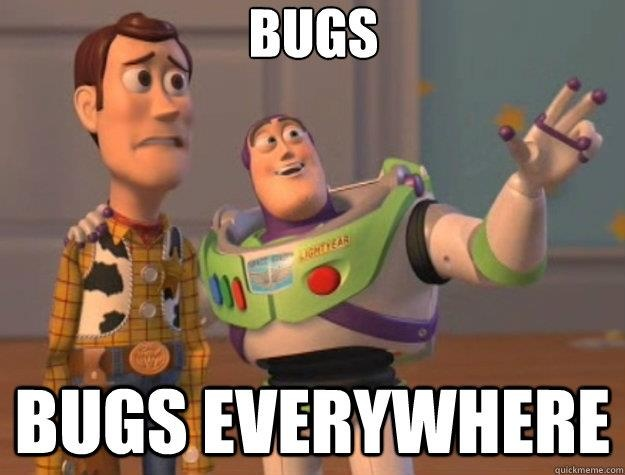

Do Planejamento ao Deploy
Transformando suas idéias em softwareBianca Rosa
Dev@Stone Pagamentos
Programo principalmente em...
- Python
- GoLang
- JS
Bianca Rosa
Dev@Stone Pagamentos
Gosto de...
- Entregar software > Desenvolver software
- DevOps
- Data Science
- Cerveja
Mas eu só quero escrever código :(

Porque falar disso?

Porque falar disso?
- Subestimar estágios do processo vai fazer você se arrepender mais tarde (e perder tempo!)
Porque falar disso?
- Mesmo que outros estejam envolvidos e não seja exatamente sua função, é importante saber o que eles fazem
Porque falar disso?
- Mesmo que outros estejam envolvidos, é importante saber o que eles fazem
Porque falar disso?
- Pra fazer freelas :)
Planejamento
Reuniões
Meta: Entender o que é esperado do software final.
- documentos escritos
+ mockups
Mockups
PS: Idealmente, tenha alguém que entenda de UX com você nesse estágio.
Mockups
PS: Idealmente, tenha alguém que entenda de UX com você nesse estágio.

Meta: Entender o que é absolutamente essencial para o lançamento do produto
Meta: Definir metodologia
Waterfall? Scrum? XP? Kanban? Extreme GoHorse(XGH)?Meta: Definir tecnologia
Web? Desktop? Mobile?
Python? Java? Rust? Go? NodeJS?
Angular? Vue.js? React?
BD relacional? Não-relacional? Orientado a grafos? MongoDB? Cassandra? Neo4j? PostreSQL?
Arquitetura da Solução
Desenhe tudo :)
Seja no papel, quadro branco, photoshop ou alguma ferramenta própria pra isso.
Desenvolvimento
Arquivos de configuração
Sempre, sempre use-os.Ferramentas
Perca um tempo conheçendo as ferramentas que serão usadas.Customização
Dê um pouco de carinho ao seu ambiente de desenvolvimento. Instale plugins de editores de texto, altere tamanhos de fonte, esquemas de cores.
Produtividade
Aprenda atalhos. Trabalhe com o teclado.
Documentação
Escreva somente o necessário. Mas escreva.Ambientes
Perca algum tempo isolando-os.
Configurações de desenvolvimento não devem interferir em testes.
Não custa nada começar com o pé direito
Testes
Não esqueça de testar. Você vai se arrepender depois.Ainda sobre Testes
Crie suites de teste. Unitários, integração, fronteira.Analytics
Abuse & use.Continuous Integration

CI
- TravisCI
- Jenkins
- Hudson
- CircleCI
- GoCD
CI
Faça o setup da sua aplicação antes do primeiro release.
Você nunca vai ter tempo de fazer depois.
Implantação
Mas comé que esse negócio roda em produção?
Resposta: Depende
JVM: Tomcat, Jetty ou algum Servidor de Aplicação (JBOSS)
Python: Gunicorn, Gevent, Twisted
Idealmente, com um NGINX na frente :)
Tudo rodando como background process (Serviço do Windows ou daemon).
Continuous Delivery
The end?

It's never over

twitter: @__biancarosa
tks :)